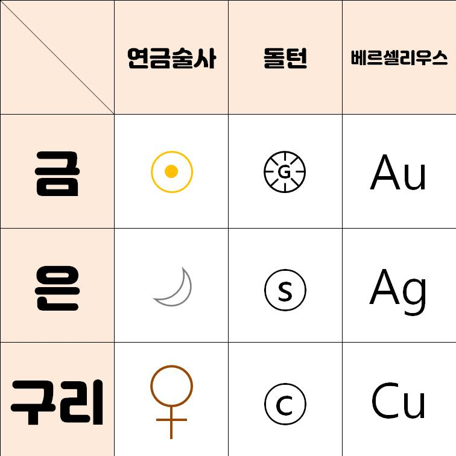
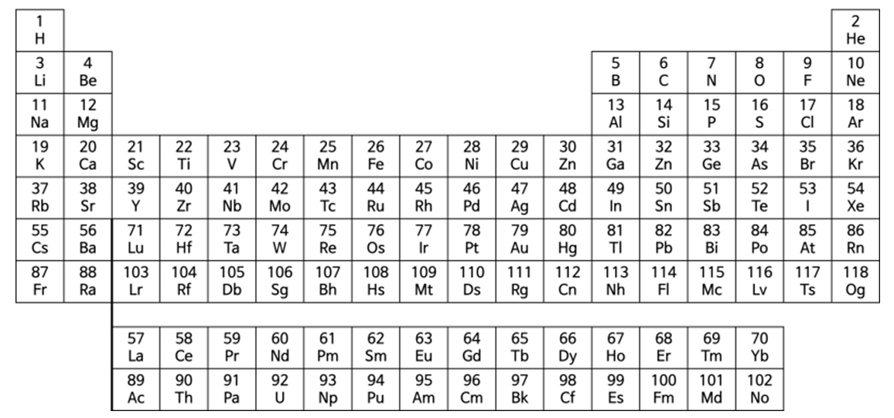

원소 기호
원소 기호
원소를 간단한 기호로 나타낸 것
현재 사용하는 원소 기호는 베르셀리우스가 제안한 것을 바탕으로 나타낸다.
베르셀리우스의 원소 기호
원소 기호 이름의 첫 글자를 알파벳의 대문자로 나타낸다.
수소 -> Hydrogen -> H
탄소 -> Carboneum -> C
첫 글자가 같을 때는 중간 글자를 택하여 첫 글자 다음에 소문자로 나타낸다.
헬륨 -> Helium -> He
염소 -> Chlorum -> Cl
원소 기호의 변천

주기율표
